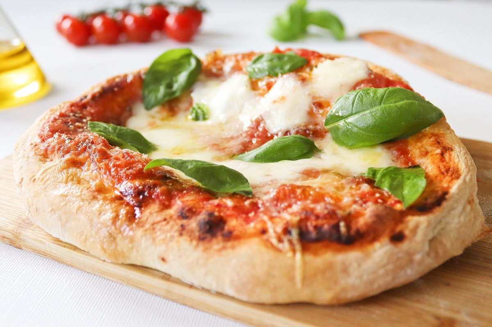

PLATO ESTRELLA ITALIANO
Receta pizza napolitana

INGREDIENTES para 4 personas
PARA LA MASA
- 500 g de harina de trigo tipo 00 (o harina de fuerza)
- 325 ml de agua tibia (alrededor del 65% de hidratación)
- 10 g de sal marina fina
- 3 g de levadura fresca (o 1 g de levadura seca)
- 1 cucharadita de azúcar (opcional, para activar la levadura)
- Queso rallado
PARA LA SALSA
- 400 g de tomates pelados San Marzano (o tomates enlatados de buena calidad)
- 1 diente de ajo (opcional)
- Sal al gusto
- 1 cucharada de aceite de oliva virgen extra
- Hojas frescas de albahaca
PARA LA COBERTURA
- 200 g de mozzarella fresca (preferiblemente mozzarella di bufala)
- Aceite de oliva virgen extra
- Hojas de albahaca fresca
ELABORACIÓN paso a paso
- 1. Disolver la levadura: En un bol grande, disuelve la levadura en el agua tibia (no caliente). Si usas azúcar, añádelo también para ayudar a activar la levadura.
- 2. Añadir la harina: Poco a poco, incorpora la harina mientras mezclas con las manos o con una cuchara de madera.
- 3. Añadir la sal: Una vez que la masa esté integrada, añade la sal y sigue amasando
- 4. Amasado: Pasa la masa a una superficie enharinada y amasa durante unos 10-15 minutos hasta que la masa esté suave, elástica y ligeramente pegajosa.
- 5. Fermentación: Coloca la masa en un bol, cúbrela con un paño húmedo o film transparente y deja reposar a temperatura ambiente durante 8-12 horas (o en la nevera durante 24 horas para un mayor desarrollo del sabor).
- 6. Formar bolas: Una vez fermentada, divide la masa en 4 porciones y forma bolas. Deja reposar nuevamente durante 1-2 horas antes de estirar.
PREPARAR LA SALSA
- 1. Tritura ligeramente los tomates pelados con las manos o un triturador para obtener una textura rústica.
- 2. Añade sal al gusto y un chorrito de aceite de oliva. Puedes añadir un diente de ajo aplastado si lo deseas para darle un toque extra de sabor.
- 3. No cocines la salsa; debe ser fresca y cruda.
MONTAR Y HORNEAR LA PIZZA
- 1. Precalentar el horno: Si tienes una piedra para pizza, colócala en el horno y caliéntalo a la temperatura máxima posible (250-300°C) durante al menos 30 minutos. Para un horno de leña, la temperatura ideal es de 430-485°C.
- 2. Estirar la masa: En una superficie enharinada, estira cada bola de masa con las manos, formando un disco de unos 25-30 cm de diámetro. Deja un borde más grueso para el clásico "cornicione" (borde)
- 3. Añadir la salsa: Extiende una capa fina de salsa de tomate sobre la masa, dejando el borde libre.
- 4. Colocar la mozzarella: Rompe la mozzarella fresca en trozos y distribúyela uniformemente sobre la pizza.
- 5. Añadir albahaca y aceite: Coloca algunas hojas de albahaca fresca y un chorrito de aceite de oliva virgen extra.
- 6. Hornear: Hornea durante 5-8 minutos en un horno muy caliente (o 90 segundos en un horno de leña), hasta que los bordes estén dorados y el queso derretido y burbujeante.
CONSEJOS PARA COMER LOS TAMALES
- Sirve los tamales calientes para disfrutar de la mejor manera de ellos.
- Acompaña los tamales con alguna salsa picante, siempre le va genial.
- Para darle un toque diferente añade queso fresco o cebolleta picada por encima.
- Los tamales también se pueden tomar en desayuno, comida o cena.